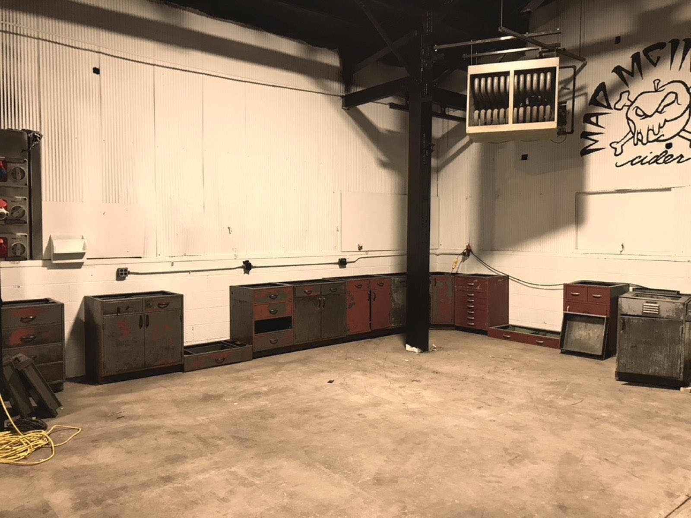
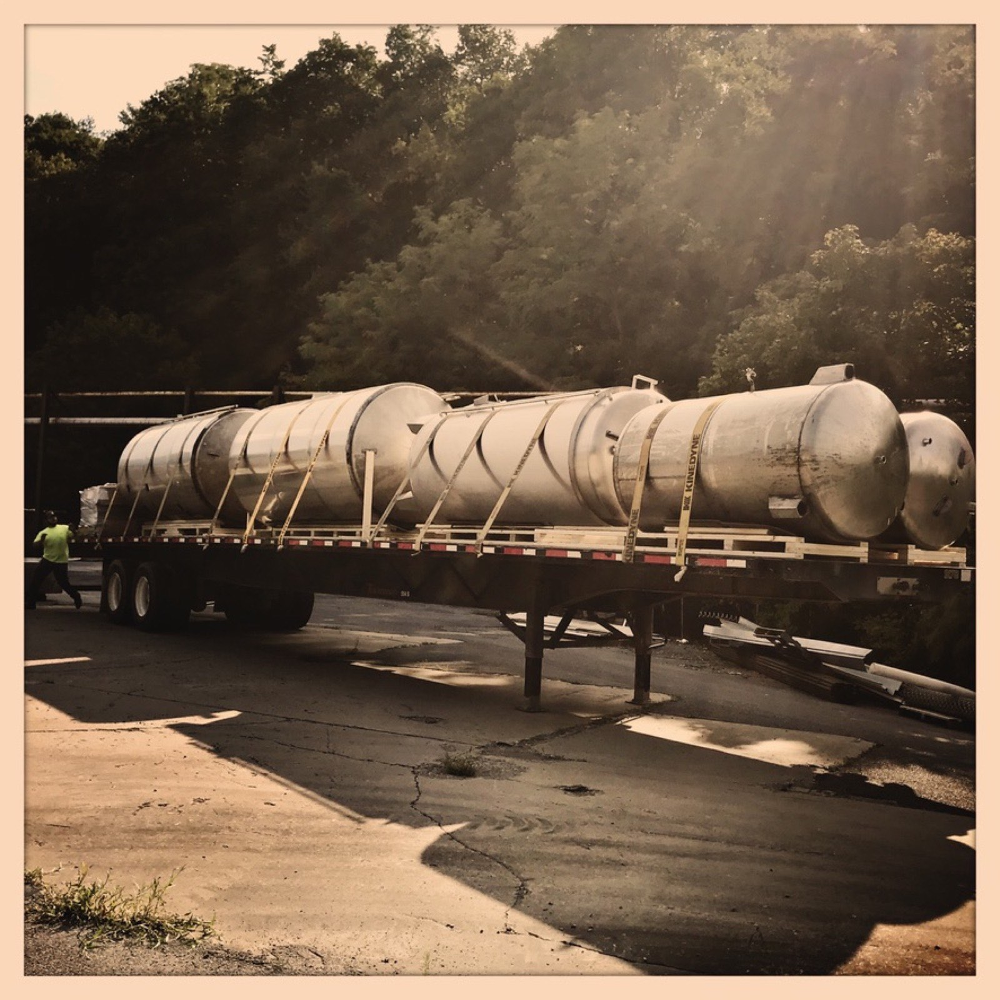

Titan Hollow started to become real right before the pandemic. My business partners and I formed our LLC in late 2019, but it would be years before our doors opened to the public. At the time I was living in New York, working as the Chief Cider Maker for Empire Cider Co. out of Geneva. In March of 2020, I sold my house, preparing to move to Bellefonte, PA and start this next crazy chapter of my life.
When the movers loaded the last of the boxes, they asked for the delivery address. I gave them the PA address, and they looked at me, startled: "We can't deliver there, our state's in lockdown, we can't cross state lines for personal deliveries, only business." Many hours (and a lot of paperwork) later, we'd pulled my personal belongings back off the truck and sent the rest on to this old factory. In retrospect, it was probably for the best. Most of that furniture and decor became the building blocks for what is now Titan Hollow.
After many years in LA, I was done commuting. The plan was to build an apartment inside Titan Energy Park, so I could walk downstairs in my slippers, coffee in hand, and check on the ferments, a daily ritual I'll tell you more about when we get to the production process. The apartment never materialized. So while I was piecing the rest of the puzzle together, my father opened his doors, and I was his little monster coming home again, something I'll always be grateful for, among countless other things. I spent five glorious months of the pandemic in his little cottage on the lake, designing and preparing for what we now all share together: Titan Hollow.

The construction process was daunting, but after working in wineries throughout the Finger Lakes and building Empire Cider Co. from the ground up, I knew what I wanted, and more importantly, what I needed. Floor drains were first on the list. Not glamorous, but essential to production.
We constructed, and by "we," I mean the fantastic, talented tradesmen who worked alongside me for almost two years building Titan Hollow. Most days they thought I was crazy. (Now they know I am.) But they always showed up at the Hollow with a smile, telling me this was their favorite project they were working on.


So, back to the drains. We cut a floor trench, and I'll admit, one of my favorite pastimes is watching men work, especially with powerful equipment. They jackhammered through a hundred years of concrete and poured new forms so water would slowly drain from one end of production to the other. Mustang Fabrication built the trench covers: steel plates strong enough to hold up to forklifts, with our Mad McIntosh logo cut right into the metal on a CNC machine.

Floor drains might seem like a small thing to anyone outside the trade, but in the art of fermentation, ninety percent of the work is cleaning, something I didn't fully appreciate until my education in viticulture and wine technology in the Finger Lakes. Being able to hose everything down and squeegee it toward a single trench running the length of production isn't a luxury. It's a necessity.


Walls went up. Multiple types of power went in. We built a removable wall, too, knowing that down the road we'd want to expand into winemaking and would need room for more tanks.

We salvaged much of Titan Metal's old lab benches. They were old and rusty, but they were top of the line metal drawer systems with slate tops underneath all that grime. Many hours and a lot of elbow grease took them from the scrap heap to glorious storage and worktops for our lab. It's truly amazing what a coat of paint can do, and we used a lot of paint in this factory's transformation.
With the cabinet systems power washed, sanded, and repainted, we moved on to the finer details, like etching the glass on our wall cabinets. I do love a good arts and crafts project. I designed our logo and put my trusty Cricut machine to work: anywhere I could brand the space, I did, including hand painting the Mad McIntosh apple straight onto the wall.


The majority of our equipment was bought secondhand at auction: all five of our bright tanks, our pumps and filters, even our bottling line. The only things we bought new were our fermentation tanks, our clean in place machine, and our glycol chiller. There are pros and cons to buying used, but most of what we needed was stainless steel, and tanks aren't particularly complicated equipment. They just need to be good quality stainless, the right size for the job, and cleaned and sanitized properly.
All of our construction happened during the pandemic. I didn't have a staff yet, we weren't producing product yet, I didn't have a time clock. It was the kind of job where you pulled out your favorite worn jeans and frayed sweatshirts, and you showered after work, not before. I was filthy, I was wet, I was cold (no heat in the factory yet), but I was happy.
We hired our first employee, Mikey, a recent Penn State grad in mechanical engineering. He designed the glycol run from tank to tank and started tackling the bottling line. I'm currently going through our SOPs (Standard Operating Procedures) and updating them, and I still smile when I read his original versions, his sense of humor comes through in every one. Mikey eventually took a job in Philadelphia, but he still comes back to the Hollow, and I update him on everything that's changed and often reach out for his opinion. I owe him a lot of thanks for bringing so much laughter to those early stages of Titan Hollow.
When you're down in the tasting room, you'll notice a line of eight red gauges mounted on the wall. Back in the metal making days, they read the activity happening inside the boilers, so operators knew when to start and stop different processes. I fell in love with them the moment I saw them in the boiler house; turned upside down, they look like little robots. Each one is named after someone who helped build the Hollow during construction. Mikey picked the robot he wanted named after him: the one with two legs. His reasoning was that if it ever came to life, he wanted to be able to run. I didn't have the heart to tell him that if the robot ever came to life, legs wouldn't matter much. He was still bolted to the wall.

Brue was our next employee. He was a sponge, absorbing every ounce of knowledge we gave him. He did everything from scrubbing floors to turning over tanks, and he was there for our very first fermentation of Queen Li. We weren't leaving anything to chance: we went through every single step of the fermentation process, committing it all to printed roadmaps for successful cider creation. He asked the right questions and did everything thoughtfully, with enthusiasm.
We made witch's ladders to hang around the tanks: cord tied with cinnamon sticks for protection and abundance, lavender for calm and clarity, dried orange slices for energy and drawing in good things, and a muslin bag of mugwort, long used for intuition, protection, and clarity of vision. One thing I believe in completely: you need to put your attention into your intentions. Making those ladders was a lesson in repetition, fully focused on the why behind what we were doing: our intention to make the best cider we could, our attention on what we wanted people to feel, and our understanding of the process of creation itself. It was an exercise in meditation, an exercise in prayer, and an exercise in the kind of repetition that carves the neural pathways the brain uses to learn and build habit. Not to mention, they looked beautiful hanging from the tanks.
Brue brought a sense of magic with him: always curious, always learning, never shy about sharing what he knew. He has a robot too: his is the one with the fabulous hair. Next time you're at the Hollow, order a Brue's Blues, our blueberry cider mimosa, named after my very first cider assistant and cellar rat (a term of endearment the winemaking industry uses for all the hard workers who create fermented libations in cellars across the world).
More chapters to come. This page will keep growing as the story does.